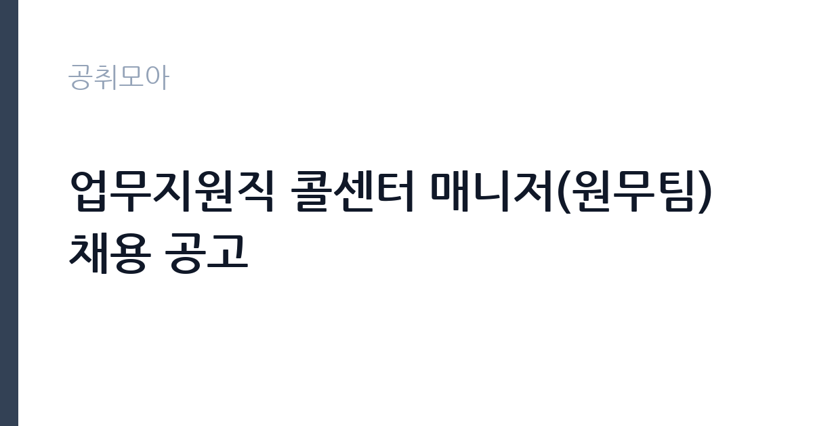

[공공기관] 업무지원직 콜센터 매니저(원무팀) 채용 공고
국립중앙의료원 · 서울 · 마감 2026-11-18 (D-14) · 출처 잡알리오

한눈에 보는 모집 조건
| 기관 | 국립중앙의료원 |
|---|---|
| 공고명 | 업무지원직 콜센터 매니저(원무팀) 채용 공고 |
| 고용형태 | 정규직 |
| 근무지 | 서울 |
| 게시일 | 2026-11-04 |
| 마감일 | 2026-11-18 (D-14) |
지원자격, 이렇게 읽으세요
- ㆍ의료기관1) 콜센터 근무경력2) 3년 이상 경력자
- ㆍ3교대 근무 가능자
- 1) 고용형태(직접고용, 파견, 도급, 위탁 등)와 관계없이 인정하되, 경력(재직)증명서 상 실제 근무한 의료기관명이 확인되어야 하며,
정규직 채용은 기간의 정함이 없는 근로계약을 전제로 합니다. 수습 기간을 두고 평가한 뒤 정규직으로 확정하는 절차가 일반적이며 기관의 인사 규정과 임금 체계를 적용받습니다. 이번 공고는 국립중앙의료원이 직접 진행하는 자체 전형입니다. 종자 관련 업무는 학력·전공 제한을 두지 않는 경우가 많고, 종자산업기사 같은 자격이나 농업 관련 경력을 우대합니다. 계약 기간이 정해진 기간제 신분으로, 근무 시작일과 종료일이 공고문에 명시됩니다. 시료 취급과 전산 입력이 업무의 핵심이라 꼼꼼함이 실질적인 평가 요소입니다. 농업·원예 관련 전공자는 관련성을 어필할 수 있습니다. 제출서류는 공고문에 적힌 순서대로 정리하면 담당자가 확인하기 쉽습니다. 공고문의 응시자격 표를 보면 자격 항목이 여러 줄로 나뉘어 있으므로, 각 줄을 하나씩 체크하며 본인 해당 여부를 표시해 두면 누락을 줄일 수 있습니다. 학력이나 전공 요건이 없는 공고라도 제출서류 목록은 그대로 적용되므로 서류 준비 부담은 줄지 않습니다. 이 공고 원문에 적힌 응시 조건 문구는 'ㆍ의료기관1) 콜센터 근무경력2) 3년 이상 경력자' / '1) 고용형태(직접고용, 파견, 도급, 위탁 등)와 관계없이 인정하되, 경력(재직)증명서 상 실제 근무한 의료기관명이 확인되어야 하며,' / '2) 경력(재직)증명서 상 부서명(또는 담당업무)에 “콜센터” 또는 “고객센터” 또는 “고객상담” 또는 “예약”이 기재된 경우에 한하여 인정'입니다. 문구를 그대로 읽고 본인 해당 여부를 하나씩 표시해 두면 서류 단계에서 탈락하는 일을 줄일 수 있습니다.
이 공고의 포인트
이 공고의 첫 번째 포인트는 고용 형태입니다. 수습 기간 평가를 통과하면 기간의 정함이 없는 신분이 되어 고용이 안정됩니다. 두 번째는 업무 범위가 명확하다는 점입니다. 종자검사·업무지원 직무로 채용되므로 배치 이후 담당 업무가 크게 흔들리지 않습니다. 세 번째는 근무지입니다. 서울 지역 근무로 접근성은 좋지만 그만큼 지원자가 몰리는 지역이므로 경쟁률을 넉넉히 잡아야 합니다. 공고가 올라온 지 얼마 되지 않아 아직 지원자 수가 많지 않을 가능성이 있습니다. 선발 인원은 공고문에 명시되어 있으니 모집분야 항목을 함께 확인하십시오.
전형은 어떻게 진행되나
서류전형과 면접전형 외에 직무수행능력 평가가 붙는 경우가 있습니다. 평가 방식은 공고문에 구체적으로 적혀 있으므로 어떤 항목에 배점이 높은지 먼저 파악하십시오. 면접에서는 지원 동기보다 실제 업무 경험에 대한 질문이 많고, 답변의 구체성이 평가를 가릅니다. 전형 일정은 서류 마감 이후 빠르게 진행되므로 연락 가능한 번호를 정확히 기재하고 문자와 메일을 수시로 확인해야 합니다. 최종 단계에서는 결격사유 조회와 신체검사가 진행됩니다. 동점자 처리 기준이 공고문에 명시되어 있으니 배점 항목을 미리 확인해 두십시오.
원문에서 확인한 전형 방식
[필수] 아래의 조건을 모두 충족한자 ㆍ의료기관1) 콜센터 근무경력2) 3년 이상 경력자 ㆍ3교대 근무 가능자 경력인정 범위 1) 고용형태(직접고용, 파견, 도급, 위탁 등)와 관계없이 인정하되, 경력(재직)증명서 상 실제 근무한 의료기관명이 확인되어야 하며, 공고마감일 기준 건강보험심사평가원 등재된 의료기관이어야 함 2) 경력(재직)증명서 상 부서명(또는 담당업무)에 “콜센터” 또는 “고객센터” 또는 “고객상담” 또는 “예약”이 기재된 경우에 한하여 인정 [우대] ㆍ종합병원 등 의료기관 진료 예약 및 원무 실무 경험자 ㆍ보건행정 관련 학과 전공자 * 상기 우대조건 부합 시, 입사지원서의 경력(경험) 기술란에 상세 기술
이런 분께 추천해요
- 검사·분석 또는 상담 응대 경험이 있는 분
- 농업·종자 분야에 관심이 있는 분
- 계약 기간 동안 성실히 근무할 수 있는 분
지원 전 체크리스트
- 응시자격 요건과 경력 기준을 충족하는가 — 경력은 증명서로 입증해야 합니다
- 수습 기간과 정규직 전환 조건을 확인했는가
- 제출서류 목록을 모두 준비했는가 — 누락 시 서류 단계에서 탈락합니다
- 접수 마감 2026-11-18 이전에 접수 방식을 확인해 제출했는가
모집 일정과 제출 타이밍
공고 게시일은 2026-11-04, 접수 마감은 2026-11-18입니다. 준비 기간은 약 14일로 서류 준비와 자격 증빙을 함께 처리하기에는 넉넉하지 않은 편입니다. 첫 이틀 안에 공고문과 첨부 서식을 내려받아 요건을 확인하고 남은 기간에 증빙 서류를 발급받는 일정이 현실적입니다. 면접은 서류 합격자 발표 후 짧은 간격으로 진행되는 경우가 많으므로 서류 제출과 동시에 면접 준비를 시작하는 편이 안전합니다. 마감일에는 접수 시스템이 몰리므로 하루 전까지 제출을 마치는 것이 좋습니다. 공휴일이 끼어 있으면 증명서 발급이 늦어질 수 있으니 발급 일정을 앞당기십시오.
직무 이해하기: 공공기관
이 기관은 공공 서비스 제공을 목적으로 설립된 공공기관으로, 채용 공고에 따라 부서별 실무 인력을 선발합니다. 기관의 사업 범위와 조직 구성은 홈페이지에서 확인할 수 있으며 채용 절차는 자체 인사 규정을 따릅니다. 국립종자원의 종자검사·콜센터 업무는 보급종 종자의 품질 확인과 농가 문의 응대를 맡습니다. 종자 시료를 접수해 검사 항목별로 분류하고, 검사 결과를 전산에 입력해 판정 자료를 만듭니다. 콜센터에서는 보급종 신청과 공급 일정, 품종 특성에 대한 문의에 응대합니다. 종자검사기간과 보급종 공급 시기에 업무가 집중되며, 시료를 다루므로 검사 절차와 기록 관리가 엄격합니다. 농번기에는 문의가 몰려 응대 업무 비중이 커집니다. 근무조는 사업 일정과 기상 상황에 맞춰 편성되므로 면접에서 배치 구역을 확인하는 것이 좋습니다. 현장 업무와 사무 업무의 비중은 기관의 사업 일정에 따라 계절별로 달라집니다. 원문에 'ㆍ의료기관1) 콜센터 근무경력2) 3년 이상 경력자'라는 조건이 명시되어 있습니다.
자기소개서 작성 팁
지원서는 검사·분석이나 고객 응대 경험을 구체적으로 쓰는 것이 효과적입니다. 실험·검사 업무를 수행했다면 시료 수와 절차, 오류를 줄인 방식을 적으십시오. 콜센터나 상담 경험이 있다면 응대 건수와 반복 문의를 줄인 사례로 연결하십시오. 짧은 계약 기간 동안 익혀야 할 업무를 어떻게 빠르게 습득할지 계획을 밝히면 좋습니다. 문항별 글자 수 제한을 먼저 확인하고, 각 문항의 첫 문장에 결론을 배치하는 방식이 읽기 쉽습니다. 지원 동기는 기관의 어떤 사업에 기여하겠다는 한 문장으로 시작하고, 이어서 본인의 경험을 근거로 붙이십시오. 감점을 피하려면 다른 기관에 보낼 수 있는 범용 문장을 그대로 쓰지 않는 것이 중요합니다. 기관 이름과 사업명이 문장 안에 자연스럽게 들어가야 준비도가 드러납니다.
면접 준비 포인트
면접에서는 절차 준수와 응대 방식을 확인합니다. 검사 결과가 예상과 다르게 나오면 어떻게 재확인할지, 같은 문의가 반복될 때 어떻게 안내 자료를 만들지 묻습니다. 시료를 다루는 업무이므로 기록을 남기는 습관을 언급하십시오. 농업 현장에 대한 이해도도 답변 소재가 됩니다. 본인 경험을 말할 때는 기간, 역할, 결과를 순서대로 정리해 두면 질문이 바뀌어도 활용할 수 있습니다.
급여·근무조건 읽는 법
알리오(공공기관 경영정보 공개시스템) 2025년 결산 경영공시 기준으로 국립중앙의료원 일반정규직 1인당 평균보수액은 7,865만원, 공시된 신입사원 초임은 3,751만원입니다. 평균보수액은 기본급에 고정수당·실적수당·성과상여금·급여성 복리후생비를 모두 합산한 값이라 월 기본급만 보고 판단하면 실제와 크게 어긋납니다. 정규직 신입의 경우 공시된 신입사원 초임이 출발점이 되고, 이후 호봉과 성과급에 따라 평균보수에 접근합니다. 국립종자원 기간제근로자 보수는 기관의 기간제 임금 기준을 따르며, 기본급에 정액급식비 등 수당이 더해집니다. 계약 기간이 정해져 있어 월 보수와 근무 개월 수를 곱한 총액으로 비교해야 합니다. 정확한 금액과 수당 항목은 공고문 처우 항목에서 확인하십시오. 2026년 적용 최저임금은 시급 10,320원, 월 환산 2,156,880원(주 40시간·209시간 기준)입니다. 고용노동부 고시 제2025-47호로 확정된 금액입니다. 공고문에 금액이 제시되지 않은 항목은 원문 보수표나 처우 설명에서 확인해야 하며 확인되지 않은 수치는 쓰지 않는 것이 원칙입니다. 비교할 때는 월 급여뿐 아니라 상여·명절휴가비·복지포인트·초과근무수당까지 포함한 연간 총액으로 계산하십시오. 기간제라면 계약 기간 동안의 총액을, 무기계약이라면 호봉 상승과 정년까지의 누적 소득을 기준으로 판단하는 편이 정확합니다.
자주 묻는 질문
- 선발 인원은 몇 명인가요?
공고문의 모집분야 항목에 직종별 인원이 표로 제시되어 있습니다. 첨부된 공고문 원문에서 확인하십시오. - 근무지는 어디인가요?
서울 지역의 국립중앙의료원 소속 근무지입니다. 세부 주소와 출퇴근 조건은 원문 공고문에서 확인할 수 있습니다. - 보수는 얼마인가요?
채용 신분(정규직)과 기관 임금 규정에 따라 정해지며 구체적인 금액은 공고문 처우 항목에 제시됩니다. 금액이 공개되지 않은 경우에는 원문의 보수표를 확인하십시오.
함께 보면 좋은 공고
[공공기관] 한국농어촌공사 영산강사업단 공무직(청소원) 보훈 장애 제한경쟁 채용공고 — 마감 2026-11-20[공공기관] 2027년 1차 박사후연수연구원, 석사후연수연구원 및 위촉연구원 공개채용 — 마감 2026-11-20[공공기관] 서울대학교치과병원 2027년 상반기 정규직(원무직) 채용 공고 — 마감 2026-11-18출처: 잡알리오 공개정보를 바탕으로 공취모아가 정리한 안내글입니다. 모집 조건·일정은 변경될 수 있으니 지원 전 반드시 원문 공고문을 확인하세요. 본 글은 정보 제공용이며 합격을 보장하지 않습니다.